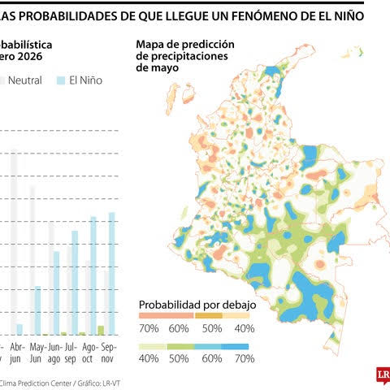
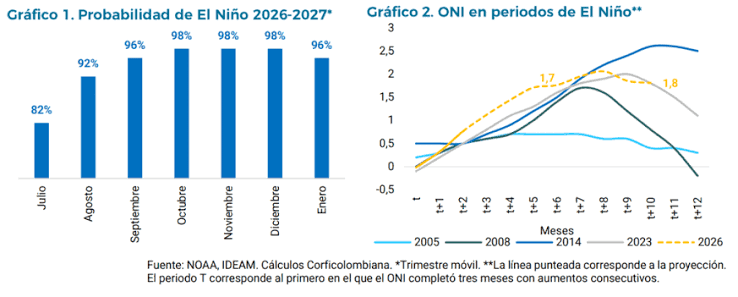
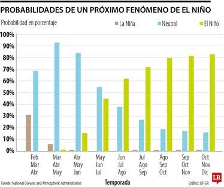
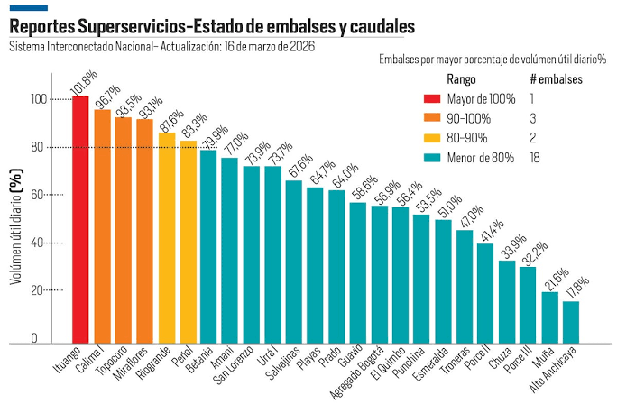

📊 Gráficos y Datos

🌡️ Evolución del Clima — Barrio Ismael Perdomo
Visualiza aquí los cambios de temperatura y lluvia a lo largo de los años:
📈 Tendencia de Temperatura

Conclusión: Se observa un aumento gradual de la temperatura.
💧 Lluvias y Disponibilidad de Agua

Conclusión: Los periodos de sequía son más largos y las lluvias más irregulares.
📊 Datos Climáticos
En esta sección puedes agregar la información y gráficas que consideres importantes:
🌤️ Cambios en los patrones de lluvia

💧 Nivel de los embalses
